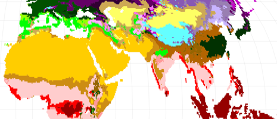
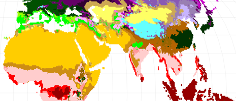

How will global warming shift climates across the globe? That is the question we sought to answer with this map, based on data published by the World Bank that contrasts 20th century weather observations (1976 to 2000) with 21st century model predictions (2076 to 2100) based on the Köppen-Geiger Climate Classification System.
The Köppen-Geiger classification System groups climates based on common characteristics, like precipitation patterns, permafrost, and distance from the equator. These categories are commonly presented as a chorochromatic map that assigns a unique color to each classification. Click on an area in this map and toggle the buttons to see how the range shifts between current and future scenarios. For example, the dry, hot desert region (Bwh) expands to cover the Middle East and Central Asia, while the Tundras (ET) and Ice Caps (EF) of mountain ranges and far northern latitudes all but disappear.
The original research supplied us with the colors, and the XYZ Hub allows us to host and tag the classification zones of current and future climates, making visualizing the radical climate shifts in d3.js a snap.
Source files and data can be accessed on GitHub.

This map was designed and built by Stamen Design with publicly available data.